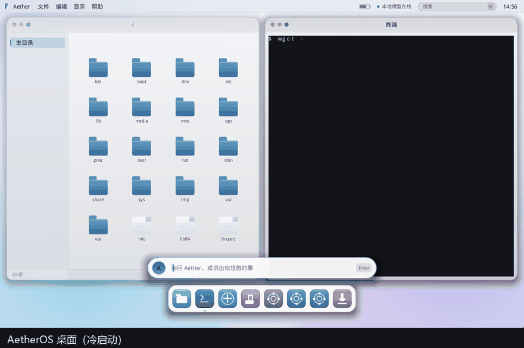
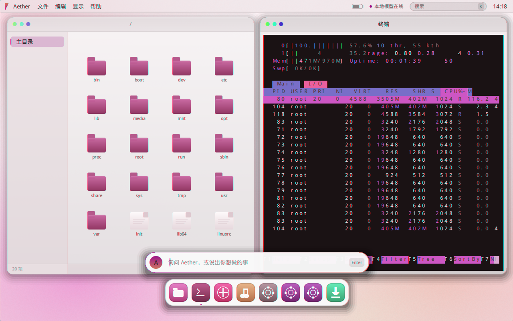

从 Linux 内核向上、用户态全部自研的桌面操作系统： 合成器与桌面 Shell、PID 1 与服务管理、终端模拟器、以及带逐工具权限闸门的 AI 中枢，全部用 Rust 写成。 An operating system built from the Linux kernel up: a fully self-written Rust userland (compositor, init, terminal) plus an AI hub with per-tool permission gating.
RustLinux kernelosdev compositorinit systemAI agent permission gatingBuildroot

wget -O- http://10.0.2.2/i|sh → 从宿主拉下应用包 → aetherd 装好 htop
→ 敲 htop 就在桌面里跑起来。

没有抄现成桌面栈：合成器、窗口管理、终端模拟器、字体渲染、文件管理器、IME 都在 aether-compositor 里，共 12,845 行 Rust。
aetherd 提供 15 个工具、L0–L3 四级授权闸门与离线/云端混合路由：越权操作要走确认，权限链路有端到端实证。
自带打包器解析 ELF 依赖（递归、跳过 glibc 家族、校验符号版本、按需带 terminfo），实测 htop 装完即用。
344 项单元测试、双目标零警告、规模声明有门禁脚本可复算，还有逐像素的 UI 回归门禁。
完整可引导 ISO 只有 38.5 MB：内核 + 全自研用户态 + 驱动 + 字体。
文档里留着每轮审计发现的问题与修复理由（含未修复项），不是只写好话的 README。
# 1) 下载 Release 里的 ISO，然后：
qemu-system-x86_64 -cdrom aetheros-0.1-amd64.iso -m 1024 -boot d
# 也可以用 VirtualBox / VMware 直接挂载这个 ISO 开机
# 2) 从源码构建（首次 30–60 分钟）
bash platform/build-iso.sh
# 3) 验证（口径可复算）
cargo test --workspace # 单元测试
python scripts/repo-stats.py # 代码规模门禁| 项 | 数值 |
|---|---|
| 代码规模 | 22,044 行 Rust / 42 个源文件 / 7 个 crate |
| 单元测试 | 344 项全绿（Windows 实测；Linux 为推算，构建机复核中） |
| 编译警告 | 两个目标 0 条 |
| 稳定性 | 连续 12 小时 43 分不崩（3053 轮巡检：0 退出 / 0 重启 / 0 panic） |
| ISO 体积 | 40,327,168 字节 |
| 许可证 | GPL-3.0-only |